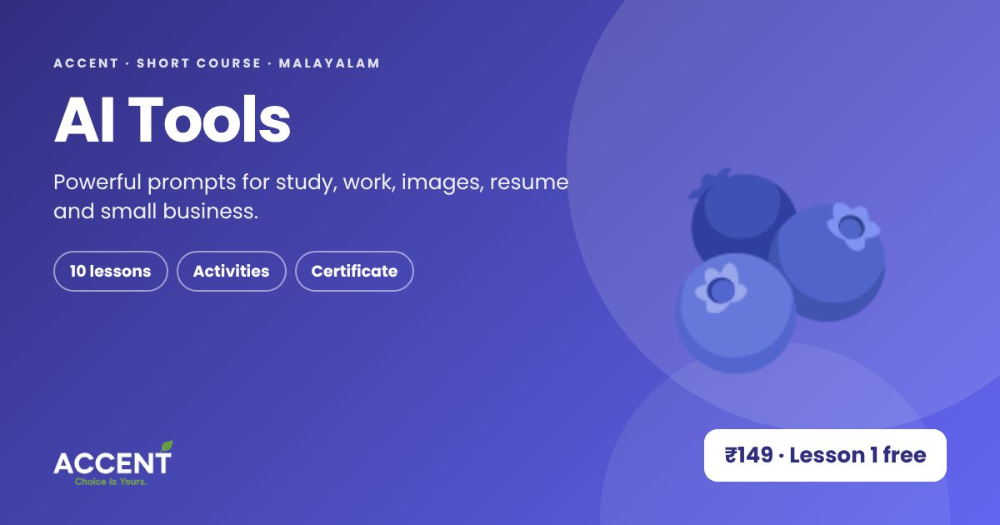

5 free AI tools every student should use
You do not need to pay to start using AI well. These five tools have free plans (with limits) and cover most of what a student needs. Plans change, so check each site for current limits.
1. ChatGPT
Good for explaining topics, drafting messages and brainstorming. Try: "Explain inflation to a 15-year-old with a tea-shop example, then ask me 2 questions."
2. Gemini
Works well with Google apps and Android phones. Try: "Make a 7-day study timetable for my exams, 2 hours a day, as a table."
3. Claude
Strong at writing and long documents. Try: "Turn these notes into a one-page summary with 5 key points."
4. Canva
Design posters, presentations and resumes with templates and AI help. Add your own text here, because AI images often get words wrong.
5. Google Lens
Point your camera and ask: translate a board, identify a plant, or solve a printed problem step by step.
The one rule
Use the RTCF formula for better answers: Role (who AI should be), Task (what to do), Context (your situation), Format (length, language, style). And always check facts, dates and numbers on an official site.
Learn AI the practical way
The Accent AI Tools course teaches prompts for study, work, images and small business in Malayalam. Lesson 1 is free.
Watch Lesson 1 free